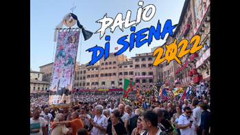

|
|
 |
17 agosto 2022
LEOCORNO
|
L'ordine è quello di entrata fra i canapi e il grassetto indica la vincitrice
In questo colore le contrade estratte a sorte
Cliccando sui nomi dei cavalli, su quelli dei fantini e sulle immagini, si apriranno le relative pagine
MOSSIERE: Bartolo Ambrosione 


Priore: Alessandro Mariotti
Vicario: Francesco Farnetani
Provicari: Riccardo Locatelli, Daniele Lodi, Laura Ortensi
Capitano: Massimo Bari
Tenenti: Raffaele Gambini, Marco Minucci, Andrea Simoni
Barbaresco: Paolo Lorenzoni
Vice barbareschi: Tommaso Mariotti, Pier Paolo Madotto
La Contrada non vinceva dal 16 agosto 2007
Il fantino non vinceva dal 2 luglio 2022

LA CONTRADA DEL LEOCORNO VINCE IL PALIO DELL'ASSUNTA
Il fantino Giovanni Atzeni, detto Tittia, su Violenta da Clodia, ancora vittorioso dopo la Carriera di luglio
La Contrada del Leocorno ha vinto il Palio: la Carriera dedicata alla Madonna Assunta in cielo.
Giovanni Atzeni, detto Tittia, dopo il Palio vinto lo scorso 2 luglio nel Drago, arriva primo anche con i colori del Leocorno e conquista la sua quarta vittoria consecutiva.
La corsa del cuore, come viene definita, in un lampo di colori e passioni ha trovato la sua esaltante conclusione nella conquista del bellissimo e altrettanto originale drappellone, carico di luce e simboli, realizzato da Andrea Anastasio.
L’attesa, prolungata di un giorno a causa della pioggia caduta copiosamente ieri pomeriggio, rendendo inagibile il tufo, non ha fatto che dilatare le speranze delle 10 contrade e rimandare l’urlo incontrollabile di gioia da parte dei contradaioli del Leocorno dopo quindici anni dall’ultimo trionfo.
Con la Chiocciola di rincorsa tra i canapi si sono allineate: Leocorno, Giraffa, Selva, Valdimontone, Onda, Civetta, Tartuca, Nicchio, Lupa. A partire in testa il Leocorno, inseguito dalla Selva, dal Valdimontone e Giraffa. Alla prima curva di S. Martino è sempre il Leocorno a condurre, inseguito da Selva e Valdimontone. La sequenza si ripeterà per tre giri, fino all’ultima curva del Casato. Inutile l’inseguimento della Selva. E’ Tittia a tagliare il bandierino e a far colorare la Piazza di bandiere e fazzoletti di color bianco e arancio con liste azzurre.
Piazza del Campo, ancora una volta, ha fatto da magnifico contenitore urbano alle emozioni e ai sogni dei senesi. A quel modo unico di rappresentarsi e presentarsi in un presente che è trasposizione di un passato ben vivo nel loro patrimonio genetico. In quella storia mai dimenticata che, con il Palio, viene orgogliosamente rivendicata e comunicata al mondo nella sfilata del Corteo Storico.
Il capitano del Leocorno ha consegnato ai suoi contradaioli il cencio – come viene chiamato a Siena il drappellone - . Lo porteranno in Duomo per ringraziare la Vergine per la vittoria conquistata.
Un momento di gloria che, pur essendo proprietà di un solo popolo, resterà indelebile nel patrimonio culturale della città tutta.
 UN BREVE DOCUMENTARIO AMATORIALE CHE CONSIGLIAMO UN BREVE DOCUMENTARIO AMATORIALE CHE CONSIGLIAMO



|
|
|